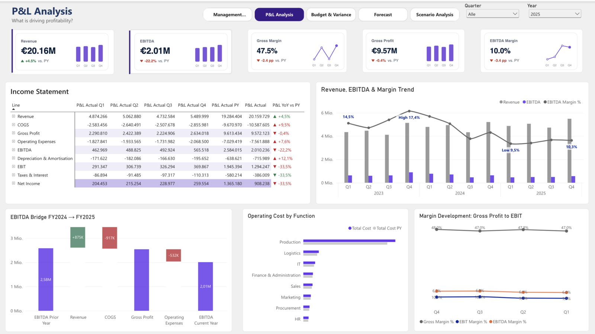
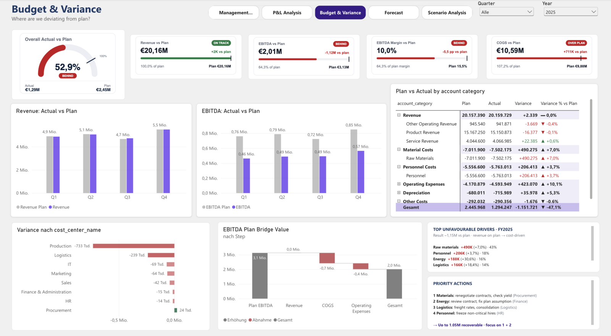
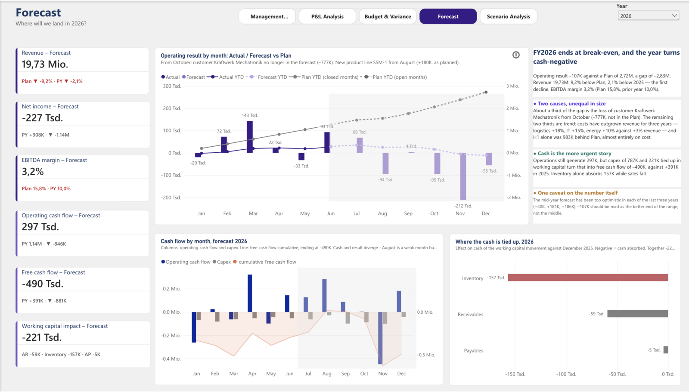
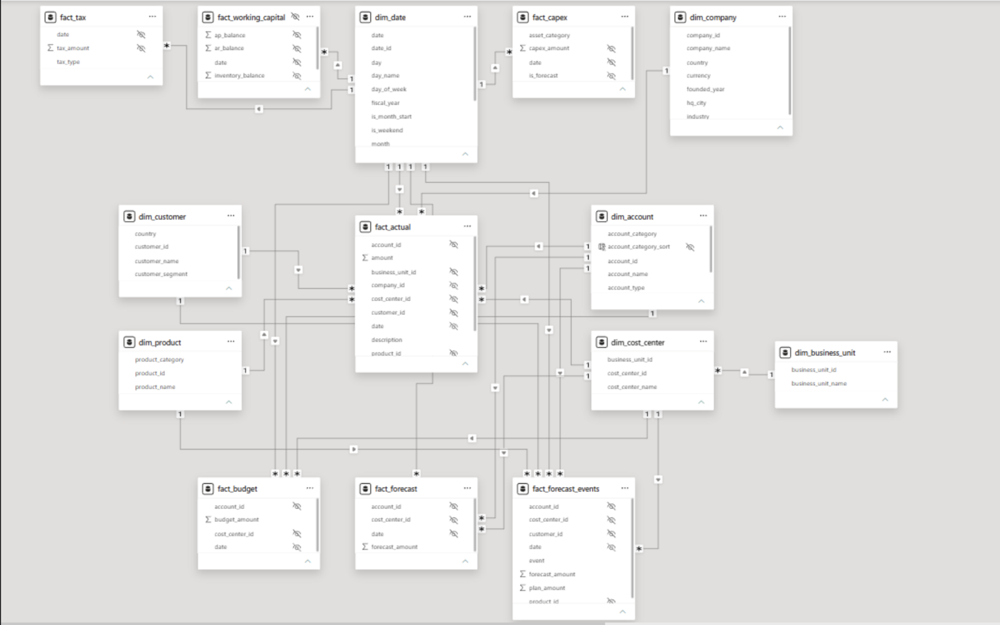

AlpenTech Controlling – Power-BI-Finanzreporting
Ein fünfseitiger Controlling-Bericht in Power BI für die fiktive AlpenTech GmbH, einen deutschen Industrie-B2B-Hersteller — von Plan-Ist-Abweichungen über Cashflow bis zur Szenarioanalyse für 2026.

Ausgangslage
Für die fiktive AlpenTech GmbH sollte ein Controlling-Bericht entstehen, der über eine reine GuV hinausgeht: Plan-Ist-Forecast-Vergleich, Cashflow und Working Capital, und eine Szenarioanalyse für das laufende Geschäftsjahr. Die Geschäftsjahre 2023–2025 sind vollständig abgebildet, 2026 als offenes Jahr mit Ist-Werten bis Juni und Forecast bis Dezember.
Fünf Berichtsseiten
- Management Cockpit — Kern-KPIs, EBITDA-Verlauf und Umsatz-zu-Ergebnis-Brücke
- P&L Analysis — GuV nach Quartal, EBITDA-Brücke 2024→2025, Margenentwicklung
- Budget & Variance — Planerreichung, Abweichung nach Kostenstelle, größte Kostentreiber
- Forecast — Hochrechnung zur Jahresmitte, Cashflow und Working Capital 2026
- Scenario Analysis — Base/Downside/Upside mit datenverankerten Annahmen
Zentrale Erkenntnisse (GJ 2025)
Der Umsatz traf mit 20,16 Mio. € den Plan, das EBITDA lag aber 1,12 Mio. € darunter — die Lücke ist kostengetrieben, größter Treiber sind Rohstoffe mit +490 Tsd. € über Plan. Die Bruttomarge erodierte von 50,9 % (2023) auf 47,5 % (2025), und aus 2,0 Mio. € EBITDA wurden nur 391 Tsd. € Free Cashflow.
Ausblick 2026
Der Forecast zur Jahresmitte zeigt ein operatives Ergebnis von −107 Tsd. € gegenüber einem Plan von +2,72 Mio. € — der erste Verlust im Datensatz. Rund ein Drittel der Lücke stammt vom Verlust des größten Kunden, zwei Drittel vom strukturellen Kostentrend in Logistik, IT und Energie.


Datenmodell
Sternschema mit sieben Dimensionen (Datum, Gesellschaft, Business Unit, Kostenstelle, Konto, Kunde, Produkt) und sieben Fakttabellen für Ist, Plan, Forecast, Working Capital, Capex und Steuern — plus einer entkoppelten Layouttabelle, die die GuV-Zeilen steuert. Umsatz ist positiv, Kosten sind negativ definiert, sodass SUM(amount) direkt das Betriebsergebnis ergibt.
DAX im Detail
- Abweichungen in % werden durch
ABS()der Basis geteilt, damit eine Kostenüberschreitung nie fälschlich als positiv erscheint - Forecast-Genauigkeit wird nur für die tatsächliche Prognoseperiode gemessen (
KEEPFILTERS), nicht für die bereits bekannten Ist-Monate - Kennzahlen über Konten hinweg (Margen, Kostenquoten) nutzen
REMOVEFILTERS ( dim_account ) - 34 Measures wurden per TMDL-Texttransformation umbenannt und gegen alle 122 Feldverweise geprüft

Designentscheidungen
Jede nicht offensichtliche Definition ist begründet dokumentiert: COGS als direkte Produktionskosten ohne Abschreibungen (einzige Definition, bei der Bruttoergebnis minus Betriebsaufwand exakt zum EBITDA führt), ein Cash-Conversion-Ziel von 75 % statt 100 % (die strukturelle Obergrenze liegt nach Steuern bei 77–81 %), und feste Szenarien statt freier Schieberegler, damit sie sich vor dem Management begründen lassen.
Zu den Daten
Der Datensatz ist synthetisch und bewusst sauber generiert (fester Seed, reproduzierbar) und wird per Skript gegen Schlüssel, Vorzeichen und Szenarien validiert. Jede Abweichung zwischen Plan, Forecast und Ist ist ein bewusstes, erklärbares Geschäftsszenario — so, wie ein Controller es untersuchen und berichten würde.
Datenmodell-Diagramm
